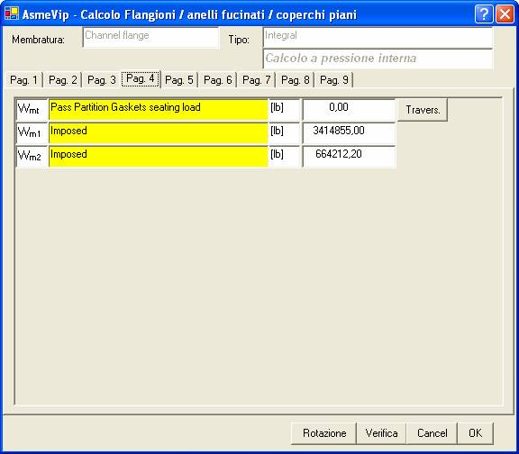
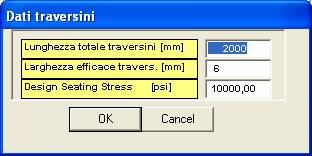

In questa pagina vengono forniti dati complementari per il calcolo delle reazioni delle guarnizioni.
I carichi Wm1 e Wm2 imposti, cioè determinati dalla presenza di flange accoppiate, con i tiranti a comune, e con pressioni di calcolo e/o diametri di guarnizione distinti, possono essere assegnati manualmente in questa pagina. Tuttavia è preferibile lasciare al programma la determinazione di questi carichi, dopo aver correttamente definito l’accoppiamento fra le flange.
Inoltre il concetto di carico imposto è utilizzato per assicurare la tenuta in prova idraulica. Infatti, se il Wm1 alla pressione di prova idraulica è superiore a Wm2, esso diviene un Wm2 imposto. I carichi effettivamente presi in conto nel calcolo sono mostrati nella Pag. 5.
Il pulsante ‘Travers.” Permette di fornire i dati rappresentati nella finestra seguente, e necessari per il calcolo della reazione sui traversini dei setti partitori.
